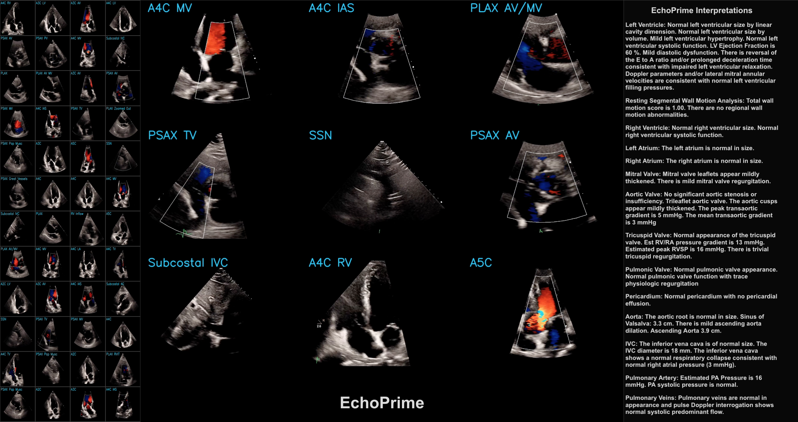

Introduction

This post is a code-forward deep dive into EchoPrime, a multi-video, view-informed Vision-Language Model designed for comprehensive echocardiography interpretation. The code repository for EchoPrime is available on GitHub and the accompanying Nature paper is available at https://www.nature.com/articles/s41586-025-09850-x.
Initialization of EchoPrime
Let’s first examine the __init__ method in the EchoPrime class, which loads everything the EchoPrime model needs:
# load language specific files
utils.initialize_language(lang)The code loads language-specific phrases from a JSON file, flattens the resulting nested lists into single flat lists (phrases_per_section_list and phrases_per_section_list_org) and then converts these phrases into regex patterns for later text matching (regex_per_section).
device = torch.device("cuda" if torch.cuda.is_available() else "cpu")This sets up device-agnostic code for PyTorch, using a GPU if one is available and falling back to CPU otherwise.
Model Architectures
MViT (Multiscale Vision Transformer) Encoder
checkpoint = torch.load("model_data/weights/echo_prime_encoder.pt", map_location=device)checkpoint contains the trained weights for a small MViT V2 model state dictionary. The weights are loaded onto the appropriate device (CPU or GPU) based on the earlier device setup.
echo_encoder = torchvision.models.video.mvit_v2_s()
echo_encoder.head[-1] = torch.nn.Linear(echo_encoder.head[-1].in_features, 512)
echo_encoder.load_state_dict(checkpoint)
echo_encoder.eval() # Set the model in evaluation mode
echo_encoder.to(device)
for param in echo_encoder.parameters():
param.requires_grad = FalseConstructs a small MViTV2 architecture and loads the pre-trained weights from the checkpoint. The model is set to evaluation mode, moved to the appropriate device (CPU or GPU), and all parameters are frozen to prevent further training.
ConvNeXt View Classifier
vc_state_dict = torch.load("model_data/weights/view_classifier.pt")vc_state_dict contains the trained weights for a ConvNeXt base model that serves as the view classifier. The weights are loaded onto the appropriate device (CPU or GPU) based on the earlier device setup.
view_classifier = torchvision.models.convnext_base()
view_classifier.classifier[-1] = torch.nn.Linear(
view_classifier.classifier[-1].in_features, 11
)
view_classifier.load_state_dict(vc_state_dict)
view_classifier.to(device)
view_classifier.eval()
for param in view_classifier.parameters():
param.requires_grad = FalseThis code constructs a ConvNeXt base architecture for view classification (11 views), loads pre-trained weights, sets the model to evaluation mode, moves it to the appropriate device, and removes gradients from all parameters to prevent further training.
Multiple Instance Learning (MIL)
MIL_weights = pd.read_csv("assets/MIL_weights.csv")
non_empty_sections = MIL_weights['Section']
section_weights = MIL_weights.iloc[:,1:].to_numpy()This code chunk loads MIL (Multiple Instance Learning) weights that encode how relevant each of the 11 echo video views are to each of the 15 cardiac sections. The non_empty_sections variable contains the names of the 15 sections, and section_weights is a 15x11 matrix where each row corresponds to a section and each column corresponds to a view.
Candidate Studies
candidate_studies = list(pd.read_csv("model_data/candidates_data/candidate_studies.csv")['Study'])
candidate_embeddings_p1 = torch.load("model_data/candidates_data/candidate_embeddings_p1.pt")
candidate_embeddings_p2 = torch.load("model_data/candidates_data/candidate_embeddings_p2.pt")
candidate_embeddings = torch.cat((candidate_embeddings_p1, candidate_embeddings_p2), dim=0)
candidate_reports = pd.read_pickle("model_data/candidates_data/candidate_reports.pkl")
candidate_reports = [utils.phrase_decode(vec_phr) for vec_phr in tqdm(candidate_reports)]
candidate_labels = pd.read_pickle("model_data/candidates_data/candidate_labels.pkl")
section_to_phenotypes = pd.read_pickle("assets/section_to_phenotypes.pkl")Here’s a summary of each file:
candidate_studies.csv: A single-column CSV with a Study column containing integer study IDs (0, 1, 2, …). These are identifiers for each echocardiogram study in the candidate pool.candidate_embeddings_p1.pt&candidate_embeddings_p2.pt: PyTorch float32 tensors, each of shape (615,338 × 512). Combined they form a (1,230,676 × 512) matrixcandidate_embeddings— one 512-dimensional embedding vector per candidate study. Split into two files likely due to file-size constraints.candidate_reports.pkl: A list of 1,230,676 entries (one per candidate study). Each entry is a list of tuples (section_id, phenotype_id, value), representing the structured echocardiogram findings for that study. Values are either numeric measurements (e.g., 76.41, 1.04, 8.59) or NaN (indicating presence of a finding without a numeric value). These get decoded into natural-language phrases byutils.phrase_decode().candidate_labels.pkl: A dict with 21 keys, each a cardiac phenotype (e.g., impella, ejection_fraction, pacemaker, aortic_stenosis, pericardial_effusion, etc.). Each key maps to a dict of {study_index: label_value}:
- Binary phenotypes (e.g., impella, pacemaker): values are 0 or 1.
- Continuous phenotypes (e.g., ejection_fraction): values are floats (e.g., 38.0, 72.0). Not all studies have values (only 607K of 1.23M for EF).
section_to_phenotypes.pkl: A dict mapping 11 echo report sections to the phenotypes they contain.
For example:
- Left Ventricle → [impella, ejection_fraction]
- Right Ventricle → [pacemaker, rv_systolic_function_depressed, right_ventricle_dilation]
- Left Atrium → [left_atrium_dilation]
- Mitral Valve, Aortic Valve, Tricuspid Valve, Pericardium, Aorta, IVC, Pulmonary Artery, etc.
Summary of Initialization
We’ve gone through all the code that runs when an EchoPrime model is initialized. This includes loading language-specific phrases, initializing the MViT encoder and ConvNeXt view classifier with pre-trained weights, setting up data structures for candidate studies and their associated embeddings, reports, and labels. The MIL weights for each section are also loaded to be used in the report generation process.
Demo of EchoPrime
Now, let’s go through the code for the EchoPrimeDemo.ipynb notebook, which demonstrates how to use the EchoPrime class to process echocardiogram videos and generate structured reports.
Preprocessing and Encoding
process_dicoms(): Reads MP4 video data from the specified folder and returns a tensor formatted for input into the EchoPrime model. All per-video tensors are stacked into a single tensor of shape (N, 3, 16, 224, 224), where N is the number of successfully processed videos, 3 is the number of color channels (RGB), 16 is the number of subsampled frames taken from each video, and 224x224 is the spatial resolution of each frame.
encode_study(): Takes the processed video tensor and passes it through embed_videos(), which uses the MViT (v2) encoder to generate a 512-dimensional embedding vector for the entire study. The processed video tensor is also passed through get_views(), which uses the ConvNeXt view classifier to predict the view type of each video, which is used to weight the video embeddings before averaging them into a single study-level embedding.
Function predict_metrics()
# per_section_study_embedding has shape (15,512)
per_section_study_embedding = torch.zeros(len(self.non_empty_sections), 512)
study_embedding = study_embedding.cpu()Creates a zero-filled tensor of shape (15, 512), one row per cardiac section and 512 columns for the embedding dimensions. Then, it moves the study_embedding to CPU for further processing.
for s_dx, sec in enumerate(self.non_empty_sections):
# get section weights
this_section_weights = [
self.section_weights[s_dx][torch.where(view_encoding == 1)[0]]
for view_encoding in study_embedding[:, 512:]
]
this_section_study_embedding = study_embedding[:, :512] * torch.tensor(
this_section_weights, dtype=torch.float
).unsqueeze(1)
# weighted average
this_section_study_embedding = torch.sum(
this_section_study_embedding, dim=0
)
per_section_study_embedding[s_dx] = this_section_study_embeddingExtracts the one-hot view encodings from the last 11 dimensions of study_embedding and look up the weights for the current section based on the view type. Then, it multiplies the first 512 dimensions of study_embedding (the video embedding) by the corresponding section weights to get a weighted embedding for that section. Finally, it sums across all videos to get a single embedding vector for that section and stores it in per_section_study_embedding.
For each of 15 sections,
- Look up view relevance weights → (N,) scalars
- Scale each video’s embedding by weight → (N, 512)
- Sum across videos → (512,)
- Store as section row → per_section_study_embedding[s_dx]
- Repeat for all 15 sections
This results in a (15, 512) tensor per_section_study_embedding where each row is a weighted average embedding for that section, reflecting the relevance of each video view to that section’s findings.
per_section_study_embedding = torch.nn.functional.normalize(
per_section_study_embedding
)This normalizes each section embedding to have unit length.
similarities = per_section_study_embedding @ self.candidate_embeddings.TThis computes the cosine similarity between each section embedding and all candidate report embeddings. The result is a (15, 1,230,676) tensor where each entry represents the similarity score between a section embedding and a candidate report embedding.
Example:
- row 0 (Left Ventricle embedding) · candidate_0 = 0.92 ← very similar
- row 0 (Left Ventricle embedding) · candidate_1 = 0.31 ← not very similar
- row 0 (Left Ventricle embedding) · candidate_2 = 0.87 ← similar
A candidate is a real echocardiogram study from the training database, and its embedding represents the findings in that study. A high similarity score indicates that the current study’s section embedding closely matches the findings of that candidate study.
So far, similarities is a (15, 1,230,676) matrix of similarity scores between each section embedding and all candidate report embeddings. A score for every (section, candidate) pair.
top_candidate_ids = torch.topk(similarities, k=k, dim=1).indicesThis retrieves the indices of the top k most similar candidate reports for each section. The result is a (15, k) tensor where each row contains the indices of the k candidate reports that are most similar to that section’s embedding.
So top_candidate_ids[0] gives the k=50 best-matching candidates for the first section, top_candidate_ids[1] for the next section, etc.
for s_dx, section in enumerate(self.section_to_phenotypes.keys()):
for pheno in self.section_to_phenotypes[section]:
preds[pheno] = np.nanmean(
[
self.candidate_labels[pheno][self.candidate_studies[c_ids]]
for c_ids in top_candidate_ids[s_dx]
if self.candidate_studies[c_ids] in self.candidate_labels[pheno]
]
)For each phenotype, predict its value by averaging that measurement across the 50 most similar historical echo studies. The final output is a dictionary preds where each key is a phenotype and the value is the predicted measurement or binary label for that phenotype.
preds example output:
{'ejection_fraction': np.float64(56.28),
'pacemaker': np.float64(0.02),
'dilated_ivc': np.float64(0.02),
'pulmonary_artery_pressure_continuous': np.float64(22.08823529411765)
}Function generate_report():
for s_dx, sec in enumerate(self.non_empty_sections):
# need to multiply it based on what section does the view belong to.
cur_weights = [
self.section_weights[s_dx][torch.where(ten == 1)[0]]
for ten in study_embedding[:, 512:]
]
...
while extracted_section == "Section not found.":
max_id = torch.argmax(similarities)
predicted_section = self.candidate_reports[max_id]
extracted_section = utils.extract_section(predicted_section, sec)
if extracted_section != "Section not found.":
generated_report += extracted_section
similarities[max_id] = float("-inf")The code leading up to similarities is equal to the code in predict_metrics(). similarities is computed as the cosine similarity between each section embedding and all candidate report embeddings and is (15, 1,230,676) in shape.
The while loop:
- Finds the top candidate report with the highest similarity score to the current section embedding.
- Extracts the text for the current section from that candidate report using
utils.extract_section(). - If a valid section is found, it appends that text to the
generated_report. If not, it sets that similarity score to negative infinity to exclude it from future consideration and continues searching for the next best candidate until a valid section is found.
The final output is generated_report, a string that concatenates the extracted sections for all 15 sections, forming a complete echocardiogram report based on the most similar historical cases.
generated_report example output:
Left Ventricle: Normal left ventricular size by linear cavity dimension. Normal left ventricular size by volume Mild left ventricular hypertrophy. Normal left ventricular systolic function. LV Ejection Fraction is 60.0 %. Mild diastolic dysfunction. There is reversal of the E to A ratio and/or prolonged deceleration time consistent with impaired left ventricular relaxation. Doppler parameters and/or lateral mitral annular (E`) velocities are consistent with normal left ventricular filling pressures. [SEP]Resting Segmental Wall Motion Analysis: Total wall motion score is 1.0. There are no regional wall motion abnormalities
Conclusion
In this post, we walked through the EchoPrime codebase — from model initialization with pre-trained weights, to how the demo notebook leverages similarity to historical echo studies to predict cardiac phenotypes and generate structured reports.